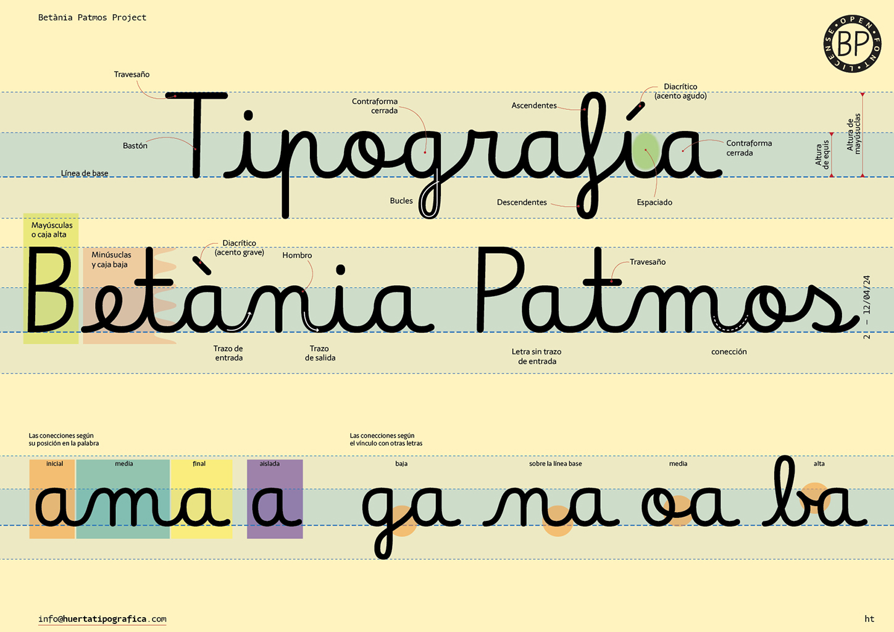
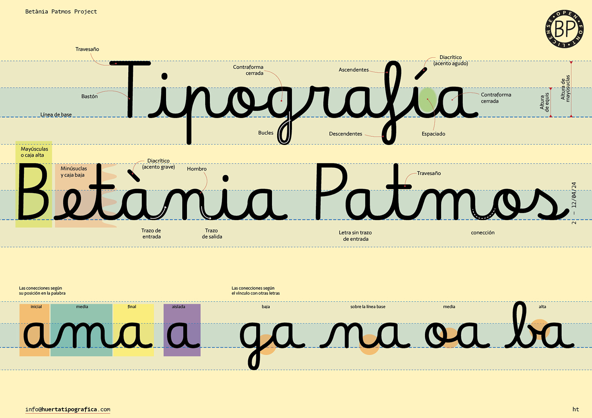

Betania Patmos is a contemporary handwriting model designed specifically for literacy education. Its austere morphology emphasizes the essential ductus of each letter, reducing visual ambiguity and supporting clear recognition rather than decorative expression. Conceived as a practical teaching tool rather than a display typeface, BP is built for simplicity and accessibility: its OpenType features rely on contextual alternates inspired by Rosalie Wagner’s Borel, ensuring full compatibility with common word-processing software such as LibreOffice, Microsoft Office, or basic text editors. Developed through an interdisciplinary collaboration with teachers, pedagogues, and educational technology specialists, BP reflects the needs of both educators and learners. Its slightly condensed proportions enhance reading efficiency by improving word density per line and page.
Betania Patmos Guideline In is the version of Betania Patmos with lines designed to support handwriting practice.
To contribute, see github.com/huertatipografica/betania-patmos.

 
